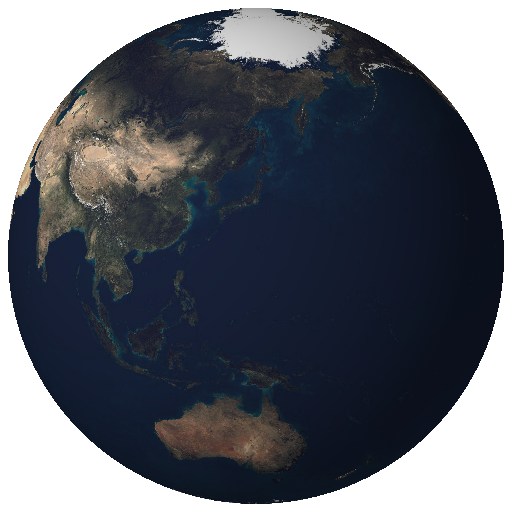

地名は地球の表面に表示します。首都・観光地の小さな点や引き出し線が位置を示します。国・地域名は代表表示位置です。
地球を回したり、まわりを歩くと別の国の名前も見られます。近づくか拡大して、細かい文字をご覧ください。
OUR HOME, FROM A NEW PERSPECTIVE
地球を、
手のひらに。
青い海も、広大な大陸も。
くるっと回して、ぐっと近づいて。
いつもの空間から、地球を旅しよう。
スマートフォンでAR体験。iPhoneはSafari、
Androidは対応するChromeで開いてください。
地球を読み込んでいます…

SOLAR SYSTEM / 03
PLANET EARTH
PLANET EARTH
選んだ地点には、地球表面から伸びるピンと名前が表示されます。
ドラッグで回転 · ピンチ / スクロールで拡大
FIND YOUR NEXT DISCOVERY
世界の場所を探す
国・地域242件、首都25件、観光地22件を収録。検索は表示対象を減らさず、地球の向きを変えるために使えます。国・地域の区分と境界はNatural Earthの簡略データです。
12,742 km
私たちの住む惑星の大きさ
約71 %
表面の約7割を覆う青い海
30 cm
AR画面で自由に拡大・縮小
地球を置いてみよう
01 場所を選び、ARボタンをタップ
02 カメラで机や床をゆっくり映す
03 地球を置いて、まわりを歩く